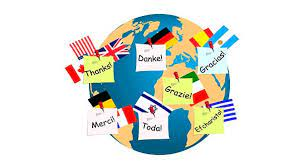

Al graduarme del colegio, pienso entrar a la universidad, preferiblemente la Universidad de Antioquia, y estudiar Traducción Español-Inglés-Francés, irme preparando para poderme ir a hacer la maestría o parte de la carrera a otro país, me encanta la traducción porque me encantan los idiomas y las diferentes culturas del mundo, amo las distintas culturas, costumbres y las prácticas que se dan en cada país, me gustaría en un futuro estudiar Filología de Lenguas Extranjeras ya prender más a fondo acerca de las lenguas y cómo se constituyeron. Los idiomas y culturas son mi pasión.
